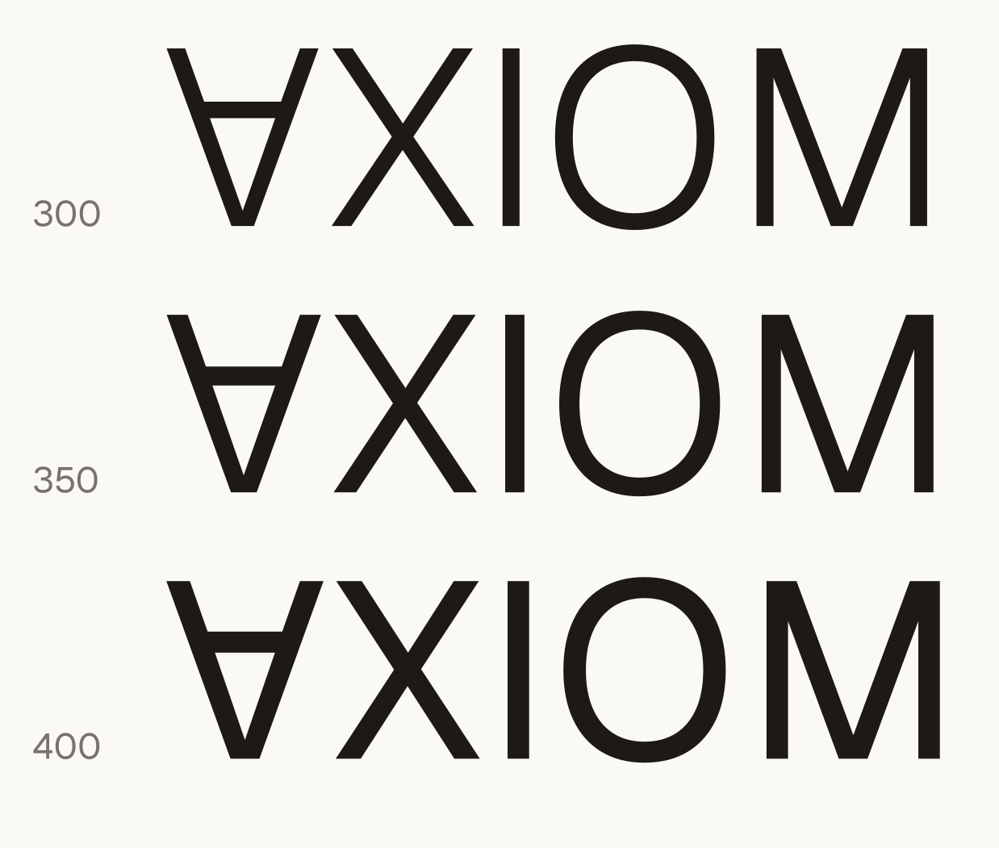

Axiom Foundation · brand assets
Official wordmarks, marks, and channel-ready exports. Everything is generated from one source (Geist, outlined to paths — no font needed to use these). SVGs scale to any size; PNGs are pre-sized per channel; vector PDFs and a favicon.ico are in the repo too. Checkered tiles indicate transparency.
AXIOM weight is settled: 350 (all channel exports use it). The open question is the FOUNDATION treatment: justified (letterspaced to the wordmark's width, current site style) a width-exact family (FOUNDATION spans the wordmark precisely — letter size and letterspacing trade off, from justified's small-and-airy to fit-max's large-and-snug), or heavier fixed-tracking scales (0.30em → 0.10em) that don't width-match — centered under the wordmark, or left-aligned flush with the ∀. Flip through everything below; arrows or keys ← → work too.

∀XIOM + FOUNDATION. Transparent SVG masters in six colors × three weights; showing w350.
The ∀ alone, and the app-icon tile (paper/ink/amber). Use the tile anywhere square: avatars, favicons, app icons.
Gradient washes and the oversize-∀ motif, applied per channel (full lockup — the outward-facing default until brand recognition). amberwash = warm radial tints on paper · inkglow = amber glow on ink · amberdeep = full amber gradient · glyph = oversize ∀ bleeding off the edge.
Company logo 400×400 · company page cover 1128×191 · personal profile banner 1584×396.
OG image 1200×630 · X header 1500×500 · avatar 400 · GitHub org 500 · icons 32–1024.
{kind=link}